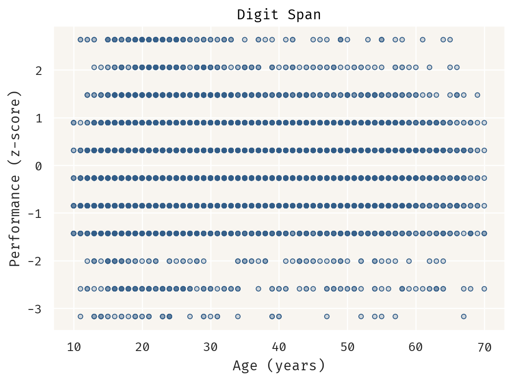
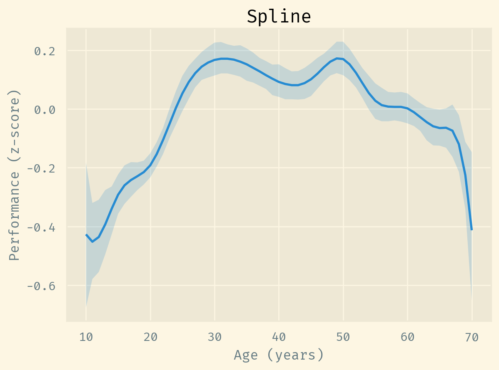
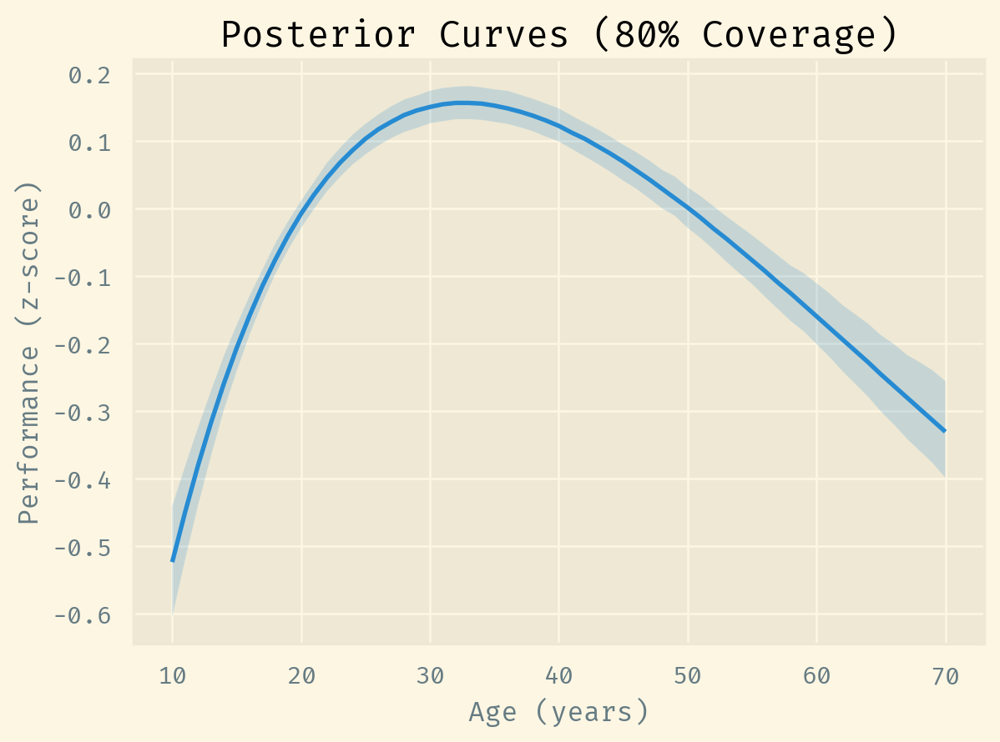
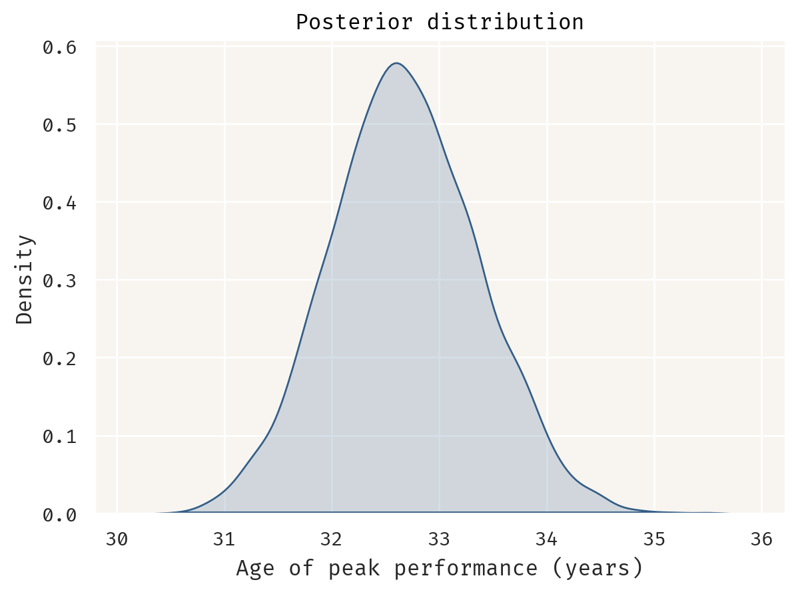

Warning
This post is a draft.
Recently, I helped design an experiment measuring a binary response against a continuous variable. If the user abandoned their cart at time zero, then we delayed for a variable number of minutes before reminding them to finish their purchase. The delay has a non-monotonic relationship to the response: as the delay increases, so does the purchase rate; then the rate peaks; and finally it decreases.
Causally, we may decompose this process into two: as the delay increases, the user 1) becomes more available for and 2) loses interest in purchasing the product. This is a common phenomena in different time-based scenarios. In sports, the “aging curve” refers to how a player’s performance increases with age, then decreases. As the player gets older, they get 1) better at the sport and 2) physically weaker.
Andrew Gelman wrote about this a couple of times in his blog: see his posts from 2018 and 2023, where Gelman suggests modeling these processes using an additive function like:
\[g(x) = g_1(x) + g_2(x),\]
where
\(g_1(x)\) is a monotonically increasing function with a right asymptote; and
\(g_2(x)\) is a monotonically decreasing function with a left asymptote.
In this post, we’ll analyse an experimental dataset by fitting and comparing three different models: a non-parametric bootstrap, a semi-parametric spline and a fully parametric decomposable curve like \(g(x)\).
The Digit Span test
The motivation for Gelman’s 2018 post was a study relating age to peak cognitive functioning (Hartshorne and Germine 2015). According to the study, one of their experiments was a large scale online experimentation platform:
Hartshorne, Joshua K., and Laura T. Germine. 2015. “When Does Cognitive Functioning Peak? The Asynchronous Rise and Fall of Different Cognitive Abilities Across the Life Span.” Psychological Science 26 (4): 433–43. https://doi.org/10.1177/0956797614567339.
Participants in Experiment 2 (N = 10,394; age range = 10–69 years old) […] were visitors to TestMyBrain.org, who took part in experiments in order to contribute to scientific research and in exchange for performance-related feedback. […] We continued data collection for each experiment for approximately 1 year, sufficient to obtain around 10,000 participants, which allowed fine-grained age-of-peak-performance analysis.
The dataset for Experiment 2 is available online (Germine and Hartshorne 2016) and includes results of the Digit Span verbal working memory test, part of the Wechsler Adult Intelligence Scale (WAIS) and Wechsler Memory Scale (WMS) supertests. In the Digit Span test, subjects must repeat lists of digits, either in the same or reversed order.
Germine, Laura, and Joshua K Hartshorne. 2016. “Hartshorne & Germine (2015) When Does Cognitive Functioning Peak?” OSF. osf.io/f2saj.
Let’s plot the relationship between age and Digit Span performance:
Visually, it’s still unclear if this relationship follows an aging curve, but we’ll get back to this matter in the next section.
Bootstrap estimates
In the original paper, the authors describe a bootstrap resampling procedure to estimate the distribution of ages of peak performance:
Estimates and standard errors for age of peak performance were calculated using a bootstrap resampling procedure identical to the one used in Experiment 1 but applied to raw performance data. To dampen noise, we smoothed means for each age using a moving 3-year window prior to identifying age of peak performance in each sample. Other methods of dampening noise provide similar results.
Let’s decompose this method (as I understand it) into steps:
- With replacement, sample \(n\) observations from the dataset;
- Calculate the mean performance for each sample and age;
- Repeat steps 1 and 2 \(m\) times to get multiple samples;
- Sort each sample by age and smooth age means using a 3-year rolling average;
- Find the age of peak performance for each sample.
import polars as pl
n = experiment.height
m = 10000
nm = n * m
seed = 37
samples = (
experiment.sample(nm, with_replacement=True, seed=seed)
.with_columns(sample=pl.arange(1, nm + 1) % m)
.group_by("sample", "age")
.agg(mean=pl.col("y").mean())
.sort("sample", "age")
.with_columns(smoothed_mean=pl.col("mean").rolling_mean(3).over("sample"))
)
peak_performance = samples.group_by("sample").agg(
age=pl.col("age").get(pl.col("smoothed_mean").arg_max())
)This yields the following bootstrap distribution of ages of peak performance:

This distribution suggests two important things:
- The most probable age of peak performance is, by far, 33;
- There is a non-negligible probability that the age of peak performance happens in the early 20s, but a negligible probability that it happens in the late 20s.
Thing 2 certainly deserves attention. This is possibly caused by a confound variable or some measuring error, but I won’t investigate this any further. Instead, let’s get back to estimating curves. We will use the samples from step 4 to summarize the distribution of mean performances. For each age, we calculate the mean and 90% interquantile range, yielding a nonparametric curve:

This figure is analogue to figure … in the paper. Since this is an entirely empirical curve, there isn’t much to interpret here (maybe unitary changes?). However, the curve shape indicates an aging-curve-likeness.
Penalized splines
Splines are wiggly curves…
\[ \begin{align} g(x) &= \alpha + Z \bf{b} \\ y &\sim \mathrm{Normal}(g(x), \sigma) \\ \alpha &\sim \mathrm{Student}(3, 0, 0.1) \\ \sigma &\sim \mathrm{HalfCauchy}(1) \end{align} \]
Polynomials have runge swings…
We could make assumptions about the data generating process to help us pick the number of knots. Instead, let’s pick an arbitrary large number of knots (say, 15) and let the model itself learn how wiggly the curve should be.
\[ \begin{align} b &= \tau \bf{z} \\ \tau &\sim \mathrm{HalfCauchy}(1) \\ \bf{z} &\sim \mathrm{Normal}(0, 1) \end{align} \]
https://www.pymc.io/projects/examples/en/latest/howto/spline.html
https://www.tjmahr.com/random-effects-penalized-splines-same-thing/
https://elevanth.org/blog/2017/09/07/metamorphosis-multilevel-model/
import pymc as pm
with pm.Model() as spline:
Z = pm.ConstantData("Z", Z)
α = pm.StudentT("α", 3, 0, sigma=0.1)
τ = pm.HalfCauchy("τ", 1)
z = pm.Normal("z", 0, 1, size=Z.shape[1])
b = pm.Deterministic("b", τ * z)
μ = pm.Deterministic("μ", α + pm.math.dot(Z, b.T))
σ = pm.HalfCauchy("σ", 1)
pm.Normal("y", μ, σ, observed=y)Auto-assigning NUTS sampler...
Initializing NUTS using jitter+adapt_diag...
Sequential sampling (4 chains in 1 job)
NUTS: [α, τ, z, σ]
Sampling 4 chains for 1_000 tune and 1_000 draw iterations (4_000 + 4_000 draws total) took 51 seconds.::: {#cell-spline-plot .cell 0=‘s’ 1=‘p’ 2=‘l’ 3=‘i’ 4=‘n’ 5=‘e’ 6=‘-’ 7=‘p’ 8=‘l’ 9=‘o’ 10=‘t’ execution_count=9}

:::
Splines are good interpolation tools…
“when, where and how things change”… https://www.youtube.com/watch?v=Zxokd_Eqrcg&t=506s
However, it’s not a good idea to extrapolate…
Two component function
All intervals are 80% credibility…
\[ \begin{align} g_1(x) &= \alpha_1 + \beta_1 \exp(-\lambda_1 x) \\ g_2(x) &= \alpha_2 + \beta_2 (1 - \exp(-\lambda_2 x)) \\ g(x) &= g_1(x) + g_2(x) \\ &= \alpha + \beta_1 \exp(-\lambda_1 x) + \beta_2 (1 - \exp(-\lambda_2 x)) \end{align} \]
\[ \begin{align} y &\sim \mathrm{Normal}(g(x), \sigma) \\ \alpha &\sim \mathrm{Normal}(0, 2) \\ \lambda &\sim \mathrm{Exponential}(0.01) \\ \sigma &\sim \mathrm{Exponential}(1) \\ \end{align} \]
import pymc as pm
def g(x):
y = α[0] * pm.math.exp(-λ[0] * x) + α[1] + α[2] * (1 - pm.math.exp(-λ[1] * x))
return y
with pm.Model() as model:
x = pm.ConstantData("x", x)
α = pm.Normal("alpha", 0, 2, size=3)
λ = pm.HalfNormal("lambda", 0.01, size=2)
μ = pm.Deterministic("mu", g(x))
σ = pm.HalfNormal("sigma", 1)
pm.Normal("observed", mu=μ, sigma=σ, observed=y)
\[d/dx g(x) = a_2 b_2 e^(b_2 (-x)) - a_1 b_1 e^(b_1 (-x))\] \[x = \frac{\log(\frac{a_1 b_1}{a_2 b_2})}{b_1 - b_2}\]

Citation
BibTeX citation:
@online{assunção2024,
author = {Assunção, Luís},
title = {Additive Aging Curve},
date = {2024-01-23},
url = {https://assuncaolfi.github.io/site/blog/non-monotonic},
langid = {en}
}
For attribution, please cite this work as:
Assunção, Luís. 2024. “Additive Aging Curve.” January 23,
2024. https://assuncaolfi.github.io/site/blog/non-monotonic.